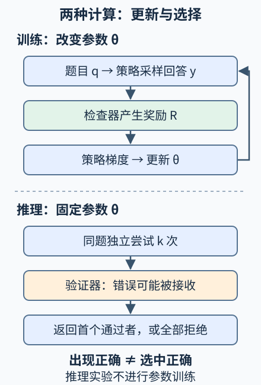

本讲目录
AI 前沿 02 · 可验证奖励：训练更会解题，还是让解法更容易被抽到
核心问题：模型一次答对率上升，是否意味着它发现了全新的推理方法？多生成几份答案，又是否一定能选出正确的一份？本讲把训练、搜索与验证分开建模。先修：反向传播、后训练背景、推理服务中的成本。资料核查截至 2026-09-08；引用保留首次公开日期，课堂数字都是明确假设下的计算。
1. 会打分，不等于已经知道正确解法
设任务是写一个整数排序程序。模型生成代码，测试器运行测试，再返回 0 或 1。与逐步告诉模型如何排序相比，可验证奖励强化学习（RLVR）只要求某种外部检查产生奖励。模型称为策略 \(\pi_\theta\)，参数是 \(\theta\)；题目记为 \(q\)，完整回答记为 \(y\)，奖励是 \(R(q,y)\)。
“可验证”描述奖励的来源，不是绝对可靠的承诺。通过有限测试的程序仍可能漏掉重复元素或空数组；数值答案正确也不保证中间证明正确。我们真正关心的性质记为 \(C\)，检查器给出的接收信号记为 \(V\)，研究时不能偷偷把 \(C=1\) 与 \(V=1\) 当成同一件事。

2. 奖励怎样改变回答概率
先固定一道题、忽略正则项，并假设回答长度有界、奖励本身不依赖 \(\theta\)。最大化期望奖励
利用 \(\nabla\pi=\pi\nabla\log\pi\)，在可交换求和与微分的条件下，
回答由 token 序列组成，乘法概率变成对数的加法：
因此一次最终奖励可以影响整段回答的 token 概率。这提供了学习信号，却没有自动告诉我们究竟哪一步值得奖励：碰巧正确的步骤也会一起受到影响，这叫信用分配问题。
若基线 \(b(q)\) 不依赖本次采样的回答，可用 \(R-b(q)\) 替代 \(R\)，因为期望下 \(\mathbb E\nabla\log\pi=0\)。合适的基线能减少梯度估计的波动。GRPO 的一个关键设计是对同题的一组回答比较奖励，例如
其中 \(s_R\) 是组内标准差，\(\varepsilon>0\) 防止除零。组内均值与标准差来自样本；不要把这个经验归一化直接等同于上面的任意无偏基线定理。完整 GRPO 还包含新旧策略概率比、裁剪、参考策略约束等设计，不能只照这一行实现算法。DeepSeekMath，首稿 2024-02-05，第 4 节给出原始方法。
若某组全错且奖励全为零，所有 \(A_i=0\)：这组相对奖励没有区分方向。探索分布、题目难度、奖励粒度和基础模型能力都会影响学习，不是有一个 0/1 检查器就能无限进步。
3. 推理时计算：先问“出现过”，再问“选对了”
冻结参数，对同题独立采样 \(k\) 次，每次真实正确概率为 \(p\)。所有候选都错的概率是 \((1-p)^k\)，故
这是理想判定下“至少出现一个正确答案”的覆盖率，不是系统最终返回答案的正确率。若每次都复制相同答案，尝试完全相关，多抽几次也不会得到这条曲线。在数据集上，各题有自己的 \(p_j\)，应平均各题的覆盖率，不能把平均单次正确率先代入非线性公式。
现在明确一个有缺陷的选择规则：正确答案总被接收，错误答案以 \(\alpha\) 的概率误接收；候选及检查事件独立，系统返回第一个被接收的候选。单次接收概率
第 \(i\) 次返回正确，要求前 \(i-1\) 次被拒绝、本次真实正确。因此
相应地，错误返回概率是 \(\frac{(1-p)\alpha}{r}[1-(1-r)^k]\)，全拒绝概率是 \((1-r)^k\)。当 \(r=0\)，系统始终拒绝，正确与错误返回概率均为零。只看有返回的情况，正确比例为 \(p/r\)。候选变多不能自动修复验证器，甚至会增加错误返回的绝对概率。
4. 实验：给计算预算同时配上验证器
先预测：若 \(p=0.2\)，尝试 4 次的覆盖率接近六成，系统实际返回正确的概率也会接近六成吗？把误接收率从零调到 0.1，再核对区别。
静态实验后备：p=0.2、α=0.1、k=4
| 量 | 公式 | 结果 |
|---|---|---|
| 至少出现一个真实正确候选 | 1−0.8⁴ | 0.5904 |
| 至少接收一个候选 | 1−0.72⁴ | 0.73126144 |
| 最终返回正确 | (0.2/0.28)×(1−0.72⁴) | 0.52232960 |
| 最终返回错误 | (0.08/0.28)×(1−0.72⁴) | 0.20893184 |
| 全部拒绝 | 0.72⁴ | 0.26873856 |
最后三项相加为 1。给定系统返回了答案，其正确比例约为 0.7143。这个实验计算独立尝试与假阳性验证的概率，没有更新模型参数，不是 RL 训练模拟，也不判断思维链是否忠实。
5. 研究证据：哪些结论可以带出实验
DeepSeek-R1 首稿，2025-01-22报告了基于奖励的后训练及不同训练流程，提供了特定模型与任务上的推理表现证据。它不把上面的独立采样公式变成训练定律，也不能证明每段公开思维链都反映真实内部机制；本讲引用首稿，不将后来修订当成首发内容。
Snell 等，首稿 2024-08-06研究测试时计算如何随题目难度与方法改变收益。其意义是需要按任务分配预算，不能笼统承诺“多想一定更好”。Yue 等，首稿 2025-04-18用不同采样预算考察 RLVR 后的能力边界，报告的现象提醒我们：单次成功率提高与大预算下的解题覆盖变化必须分别测量，结论受所测模型、任务与预算限制。
更新的测量争论：The Hidden Costs and Measurement Gaps of RLVR于 2025-09-26 首次提交，所核查 v3 修订于 2026-05-25。这是一篇立场与测量研究：作者指出部分所测差距在预算、提示与数据版本匹配后缩小，并主张同时报告拒答、校准和污染检查；它不是“RL 无效”的一般定理。
它与本讲选择模型的联系很具体：让系统更少拒绝，可能同时增加正确返回和错误返回。只比较回答数量或某一个 pass@k 点，不能区分策略改善、搜索预算增加与验证器改变。应在相同预算下，另报双方都尝试回答的题目上的正确率，以及新增尝试题目的表现；这种拆分也不能替代完整端到端评估。
做前沿复现时，应固定题目切分，记录训练预算、输出长度、采样温度、验证器错误率与实际选择规则；再画预算—正确率曲线。形式证明检查器能验证所写命题是否被证明，却不能替人确认题目形式化是否忠于原意。公开自然语言推理是输出数据，内部机制需要下一讲的因果干预等独立证据。
6. 两道迁移题
题一：极端验证器。 若 \(\alpha=1\)，无限增加 \(k\) 能提高最终正确率吗？
展开答案
不能。\(r=1\)，检查器总接收第一个候选，返回正确率就是 \(p\)。与此同时 oracle 覆盖率在 \(p>0\) 时趋近 1。二者的巨大差异来自“找到”与“选出”之间的验证瓶颈。
题二：训练组没有奖励差异。 四个回答都通过一个过弱的测试集，组内奖励全为 1。能否据此宣布模型已学会任务？还应改变什么？
展开分析
组内相对优势为零，说明当前奖励没有区分这四个回答；不能推断真实正确性或任务覆盖。应引入独立的边界测试、检查反例和题目难度，再看新测试上的表现。不要把最终测试集直接拿来反复选择训练设置，否则评估会泄漏。
速查摘要
| 问题 | 公式或判据 | 限制 |
|---|---|---|
| 奖励训练 | \(\nabla J=\mathbb E[R\nabla\log\pi_\theta]\) | 本式奖励不依赖参数；实际算法另有稳定化设计 |
| 独立候选覆盖 | \(\mathrm{pass@}k=1-(1-p)^k\) | 固定题目、独立同分布尝试；不是选择正确率 |
| 有误接收的首个通过策略 | \(r=p+(1-p)\alpha\)，\(P_{correct}=p[1-(1-r)^k]/r\) | 正确必接收；\(r=0\) 时正确返回概率为 0 |
| 忠实机制 | 公开思维链需要独立机制证据 | 答案正确与文字解释忠实分开评估 |
先修入口：反向传播、后训练。一手来源：DeepSeekMath，2024-02-05 首稿、DeepSeek-R1，2025-01-22 首稿、测试时计算分配，2024-08-06 首稿、RLVR 能力边界研究，2025-04-18 首稿。近期测量入口：RLVR 测量研究，2025-09-26 首稿／2026-05-25 v3。研究资料核查截至 2026-09-08。